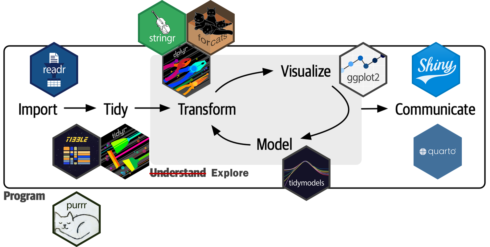
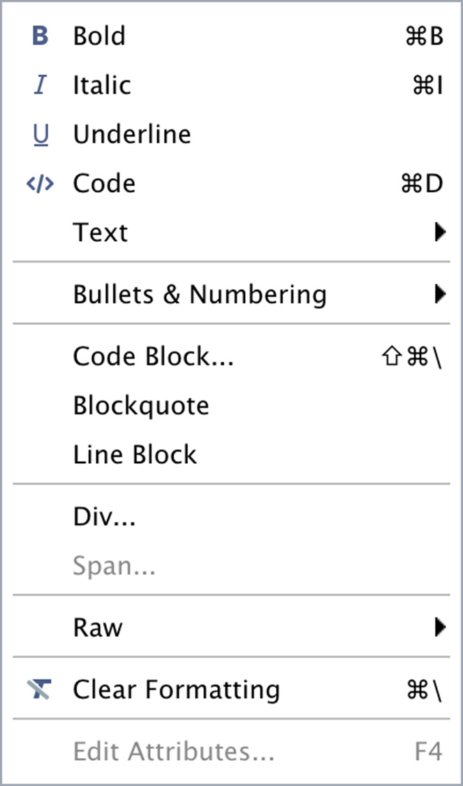

Communication with Data: Quarto
Communication in a data science process

Packages


Thanks to Quarto

Quarto: Definition
“과학적, 기술적 출판을 위한 오픈소스 시스템(an open-source scientific and technical publishing system)”
- 오픈소스 저작 시스템
다양한 형식의 저작물(노트, 연구 논문, 프레젠테이션, 대시보드, 웹사이트, 블로그, 서적 등)을 다양한 디지털 포맷(HTML, PDF, MS Word, ePub 등)으로 출판할 수 있게 해주는 도구
적용 분야의 스케일
개인 스케일: 노트, 레포트, 연구 논문, 프레젠테이션, 블로그 등의 작성 도구
그룹 스케일: 프로젝트의 원할한 진행을 위한 협업 프레임워크
사회 스케일: 과학 커뮤니티의 재현성(reproducibility) 고양
Quarto: Functions

Quarto: Syntax
마크다운(markdown) 언어: 팬독(pandoc)
마크업(markup) 언어: 다큐먼트의 구조와 포맷을 관장하는 텍스트-엔코딩 시스템
사용자의 편의성을 크게 향상시킨 마크업 언어
Quarto 다규먼트:
.qmd- 프로그래밍 언어 + 워드프로세서
Quarto: Rendering
knitr패키지:.qmd를.md로 전환pandoc:.md를 다양한 디지털 포맷으로 전환

Quarto documents: Basic structure
YAML 헤더(header)
- 일종의 메타데이터
- 다큐먼트의 전반적인 사항을 관장
코드 청크(code chunk)
- 프로그래밍 언어가 들어가는 부분
- R 스크립트 파일
마크다운 텍스트(markdown text)
- 워드프로세서처럼 텍스트를 작성(도표 포함)

YAML header
| key | 설명 |
|---|---|
| title | 다큐먼트의 제목 |
| date | 다큐먼트 작성 날짜 |
| author | 다큐먼트 저자 이름 |
| format | 다양한 포맷 관련 사항의 지정 |
| toc | 목차 삽입 |
| number-section | 섹션 제목에 자동 번호 부여 여부 |
| execute: echo | 소스 코드의 포함 여부를 글로벌하게 설정, 보통 true |
| execute: warning | 경고 메시지를 산출물에 나타나게 할지를 글로벌하게 설정, 보통 false |
| editor | 비주얼 에디터와 소스 에디터 중 선택, 보통 visual |
Code chunck
| Option | Run code | Show code | Output | Plots | Messages | Warnings |
|---|---|---|---|---|---|---|
eval: false |
X | X | X | X | X | |
include: false |
X | X | X | X | X | |
echo: false |
X | |||||
results: hide |
X | |||||
fig-show: hide |
X | |||||
message: false |
X | |||||
warning: false |
X |
Markdown text
비주얼 에디터(visual editor) vs. 소스 에디터(source editor)
마크다운 언어의 사용자 편이성을 한 번 더 강화한 것





Zotero

Web publication
Quarto Pub(https://quartopub.com/)
GitHub Pages(https://pages.github.com/)
Netlify(https://www.netlify.com/)